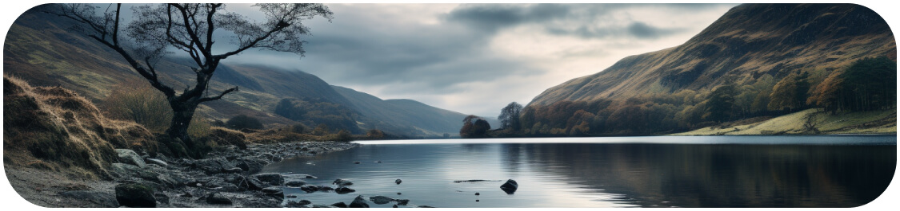

DOOZA
NFT COLLECTION

The Dooza NFT collection supports DooCoins, the kids rewards dApp built on the ICP. The characteristics and traits of the Dooza's (hard working, caring and eager to please) are a perfect inspiration for kids to earn DooCoins through completing chores, good behaviour and personal achievements. Integration of Dooza reward badges into the DooCoins app is in progress. In the meantime, grab yourself an exclusive, one-off original Dooza from MARKETPLACE NAME

THE DOOZA STORY
In the heart of Scotland, nestled along the meandering River Doon, lay the idyllic village of Doonbrea, home to a charming and peculiar species known as the Dooza's. Cousins to the legendary Haggis, but unlike their legendary kin, Dooza's craved not oats but good deeds.
Legends tell of the Dooza's origins, tracing their lineage to the Doogal clan, among them was Doug Doogal, a gentle giant with a heart as big as his belly. Known to his friends simply as Doo, he possessed an uncanny ability to connect with the Dooza's, understanding their unique language and quirks.
Under Doo's guidance, and inspired by Doo's strong work ethic and enthusiasm, the Dooza's transformed their village into a thriving and prosperous wonderland.
However, fate had a different plan for Doonbrea. In the 1930s, the River Doon's course was altered by the construction of a dam. The once-peaceful waters swelled, rising ten metres and engulfing Doonbrea. Doo and the Dooza's watched in dismay as their beloved village vanished beneath the rising water, to become Loch Doon as it's known today.
Yet, amidst the despair, a glimmer of hope emerged. Doo, with his unwavering optimism, vowed to preserve the spirit of Doonbrea. He gathered the Dooza's together and embarked on a journey to spread their infectious spirit across the world. And so, the Dooza's carried the legacy of Doonbrea, their fluffy paws treading the globe, spreading their energy and enthusiasm wherever they ventured.